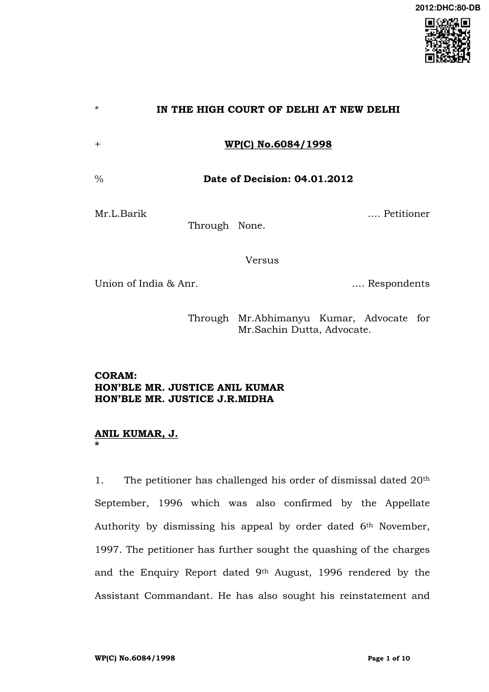

the benefits of service including the salary during the period of his alleged illegal termination from service.
- The relevant brief facts to comprehend the dispute between the parties are that the petitioner was employed as a constable with the Central Industrial Security Force and was posted, at the time of the incident, on 27th May, 1996 at the Bandi outpost, under the Rajwari Company of CISF Unit HEP, Uri (Jammu & Kashmir).
- On the said date the petitioner was asked to come to the Orderly room of the Area Assistant Commandant, Sh. Ratan Singh for enquiring about the activities of the petitioner when he was posted at the Gingle Post CISF Unit HEP, Uri (Jammu & Kashmir). The petitioner appeared in the Orderly room of the Assistant Commandant with a concealed tape recorder inside his uniform pants‟ pocket with the intention of recording the proceedings ensuing in the Orderly room. On realizing that the petitioner had been carrying a tape recorder which he had concealed in his uniform, he was asked to remove the same and place it on the table by the Assistant Commandant. However, the petitioner refused to do so, and rather he took his loaded SLR rifle and pointed the same towards the Assistant Commandant and threatened to kill him. Meanwhile the Head Constable Bahadur Singh, CHM and Constable Prem Kumar intervened and managed to get hold of the petitioner and his service rifle and prevent any harm that could have resulted at the time. On account of this incident, a charge memo under Rule 34 of the CISF Rules, 1969 dated 31st May, 1996 was issued by Commandant CISF Unit, HEP, Uri against the petitioner proposing to hold an enquiry.
- The charges leveled against the petitioner were of black mailing a senior officer; attempting to assault the senior officer; using unparliamentary language; using his rifle to attempting to kill SI/Ex.Ranvir Singh and others when they tried to take back the rifle from him; entering into conspiracy with constable Md.Yakub Sharif and the previous misconducts of the petitioner which revealed that he had become a habitual offender.
- The petitioner submitted a reply dated 8th June, 1996 denying the charges levelled against him. Consequent to denial of the charges made against the petitioner, Sh. HR. Gupta, Assistant Commandant, was appointed as the Enquiry Officer to conduct a departmental enquiry as per Rule 34 of the CISF Rules, 1969 by order dated 12th June, 1996. The petitioner by his application dated 13th July, 1996 had named 9 witnesses as the defence witnesses besides seeking the recording of the statement of all the personnel of „A‟ company, Gingle Post; all the personnel of „A‟ company, Bandi post and all persons who were present on the date of the incident of 27th May, 1996 by means of a tape recorder.
- However, despite ample opportunity being given to the petitioner to attend the enquiry and the notices served upon the petitioner, he did not appear before the Enquiry Officer during the course of the enquiry. In the circumstances, the Enquiry Officer proceeded with the enquiry and examined the witnesses who were named by the petitioner as the defence witnesses. The petitioner‟s request for recording the enquiry proceedings was denied since in any case the statements of the witnesses were being recorded in writing. During the enquiry proceedings, six prosecution witnesses and seven Court witnesses were examined.
- The Enquiry Officer submitted his report dated 9th August, 1996 holding that the charges of black mailing the senior; using unparliamentary language; entering into conspiracy with Constable Md.Yakub Sharif and the previous misconducts were fully proved and the charges of assaulting the senior officer and pointing his rifle to kill SI/Exe. Ranvir Singh and others when they tried to take back the rifle from the petitioner were partly proved. Regarding the charge of previous misconducts it was noticed that the petitioner had been punished twice during his service of 11 years as he was awarded punishment of censure by order dated 2nd March, 1991 and he was also awarded the punishment of pay reduction by one stage from `960/- to `940/- for a period of one year without cumulative effect by order dated 4th May, 1992.
- The report of the Enquiry Officer was communicated to the petitioner by letter dated 12th August, 1996 by the Commandant, CISF, Unit HEP, Uri, for affording the petitioner an opportunity to represent against it. The petitioner was given adequate time, however, he did not submit any reply, consequent to which the Appointing Authority, the Commandant, CISF issued the punishment order dated 20th September, 1996, dismissing the petitioner from the service.
- Aggrieved by the order dated 20th September, 1996 the petitioner preferred an appeal to the DIF, North Zone, New Delhi. However, after considering the pleas and contentions of the petitioner, the Appellate Authority dismissed the appeal by order dated 6th November, 1997.
- The petitioner has challenged the order of his dismissal interalia on the grounds that he was not informed that as per Rule 34 Clause 5 he was entitled to present his case with the assistance of any other member of the force and, therefore, he was denied an opportunity to defend his case properly. The petitioner also contended that though he had communicated the names of nine persons who were present on the date of incident on 27th May, 1996 to be examined, however, the Enquiry officer only examined 6 out of them while the remaining persons were not examined by the respondents. Allegation of bias against the Enquiry Officer has also been made on the ground that he conducted himself as a motivated person since the very initiation of the enquiry and was not impartial and that therefore he was unfit for holding a quasi judicial enquiry. The proceedings conducted by him were not as per the provisions of the Public Servants (Inquiries) Act, 1850 and Rule 34 of CISF Rules, 1969. The petitioner has also challenged the enquiry proceedings on the ground that the Enquiry Officer Mr. H.R.Gupta like Mr. Ratan Singh, PW-1 was an Assistant Commandant and though he was incharge of the „B‟ company whereas Mr. Ratan Singh was incharge of the „A‟ company, however, both belonged to same unit i.e. HEP, Uri. Therefore it is contended that since the Assistant Commandant of „A‟ company was involved, therefore, the Assistant Commandant of „B‟ unit should not have been appointed as the Enquiry Officer.
- The disciplinary proceedings against the petitioner has also been challenged on the ground that the evidence of the defence witnesses had not been considered and that the evidence of PW-1, PW-3 and PW-5 was unreasonably relied upon since they were the ones who were directly involved in the case, as the allegation against the petitioner was that he had assaulted them during the Orderly room proceedings, therefore, their testimonies should not have been relied upon. The petitioner has also pointed out certain inconsistencies in the statement of PW-5 and other witnesses. The petitioner denied that he took the rifle while going to Orderly room and also denied that he had kept his rifle in the verandah outside the Orderly room. Regarding the use of derogatory language against the senior officer, the petitioner contended that the statements of PWs 1, 3 and 5 in this regard cannot be believed. The petitioner has challenged the findings of the Article of Charges 4 & 5 as well. Regarding Article of Charge 6 imputing that the petitioner is a habitual offender on account of his previous misconducts, it is contended that the same could not have been relied upon since the previous misconducts referred to had already been punished.
- Regarding the aspect of replying to the Enquiry Report, the petitioner contended that he could not have replied against the findings of the Enquiry Officer within 15 days as the time given was too short and thus it is contended that the Disciplinary Authority has erred in holding that some of the charges against the petitioner has been proved fully and that the other charges were proved partly.
- No one is present on behalf of the petitioner today. No one had been present on behalf of the petitioner even on 30th November, 2011 when the matter was taken up for hearing, however, no adverse order had been passed against the petitioner on 30th November, 2011 in the interest of justice. The matter has remained in the category of “Regular Matters” since then. No one has again appeared on behalf of petitioner.
- The learned counsel for the respondents has also contended that the writ petition against the order of dismissal seeking judicial review is not an appeal from the decision of dismissal but a review of the manner in which the decision has been made. According to him the power of judicial review is meant to ensure that the individual has received fair treatment and not to ensure that the conclusion which the authority reached is necessarily correct in the eyes of the Court. The learned counsel has relied on B.C.Chaturvedi v. Union of India & Ors, (1995) 6 SCC 749 wherein the Supreme Court at page 759 has held as under:-
- Judicial review is not an appeal from a decision but a review of the manner in which the decision is made. Power of judicial review is meant to ensure that the individual receives fair treatment and not to ensure that the conclusion which the authority reaches is necessarily correct in the eye of the court. When an inquiry is conducted on charges of misconduct by a public servant, the Court/Tribunal is concerned to determine whether the inquiry was held by a competent officer or whether rules of natural justice are complied with. Whether the findings or conclusions are based on some evidence, the authority entrusted with the power to hold inquiry has jurisdiction, power and authority to reach a finding of fact or conclusion. But that finding must be based on some evidence. Neither the technical rules of Evidence Act nor of proof of fact or evidence as defined therein, apply to disciplinary proceeding. When the authority accepts that evidence and conclusion receives support therefrom, the disciplinary authority is entitled to hold that the delinquent officer is guilty of the charge. The Court/Tribunal in its power of judicial review does not act as appellate authority to reappreciate the evidence and to arrive at its own independent findings on the evidence. The Court/Tribunal may interfere where the authority held the proceedings against the delinquent officer in a manner inconsistent with the rules of natural justice or in violation of statutory rules prescribing the mode of inquiry or where the conclusion or finding reached by the disciplinary authority is based on no evidence. If the conclusion or finding be such as no reasonable person would have ever reached, the Court/Tribunal may interfere with the conclusion or the finding, and mould the relief so as to make it appropriate to the facts of each case.
- The learned counsel has also relied on, Kharak Singh v. Union of India & Ors, MANU/DE/4172/2009 in which case the charges of indiscipline were levelled against the charged officer for reporting late for briefing and not wearing the bullet proof jacket and assaulting and chasing his superior officer with a rifle, which acts were held to be the acts of severe and gross misbehaviour and therefore the penalty of reduction of pay to the minimum in the time scale for a period of two years was imposed by the Disciplinary Authority. The Appellate Authority, however, held that the penalty imposed was shockingly low and after issuing notice for enhancement of penalty to dismissal from service, the charged officer was dismissed from the service which was thereafter also upheld by the Court.
- Since no one was present on behalf of petitioner on 30th November, 2011 and inspite of the matter being continued to be shown in the regular list, no one is present even today, this Court is left with no option but to dismiss the writ petition in default of appearance of the petitioner and his counsel.
- The writ petition in the facts and circumstances is dismissed in default.
ANIL KUMAR, J.
J.R.MIDHA, J. January 04, 2012 „k‟